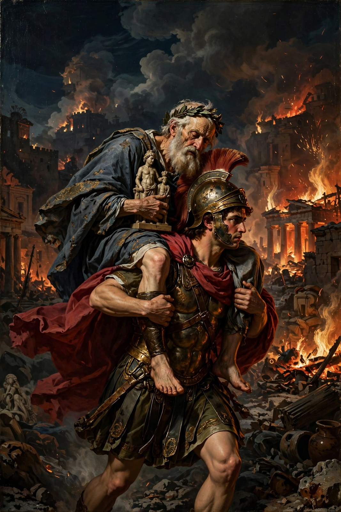

| Parents | Capys and Themiste |
|---|---|
| Consort | Aphrodite (Venus) |
| Children | Aeneas, Lyrus |
| Death | Drepanum (Trapani), Sicily |

Anchises (Greek: Ἀγχίσης) was a member of the royal family of Troy, a cousin of King Priam, and the father of the hero Aeneas by the goddess Aphrodite. He is best known from Virgil's Aeneid, in which Aeneas carries the aged, lame Anchises on his shoulders from the burning city.
Anchises was tending his herds on Mount Ida when Aphrodite, in the episode told in the fifth Homeric Hymn, appeared to him in the guise of a mortal maiden. She later revealed herself and announced that their son, Aeneas, would rule the Trojans. She warned Anchises never to boast of their union; in a later tradition he did so while drunk and was struck by Zeus's thunderbolt, leaving him lame or blinded. Anchises also bred a famous herd of horses descended from the mares of Laomedon.
In Virgil's epic, Anchises interprets omens that guide the Trojan exiles, leads their wanderings after the sack of Troy, and dies at Drepanum (modern Trapani) in Sicily, ending Book 3. In Book 6 Aeneas descends to the underworld and meets his father's shade in Elysium, where Anchises reveals the pageant of future Roman heroes and explains the destiny of Rome. His funeral games, celebrated by Aeneas in Sicily, occupy much of Book 5.
See also: Aeneas · Homeric Hymns · Adonis